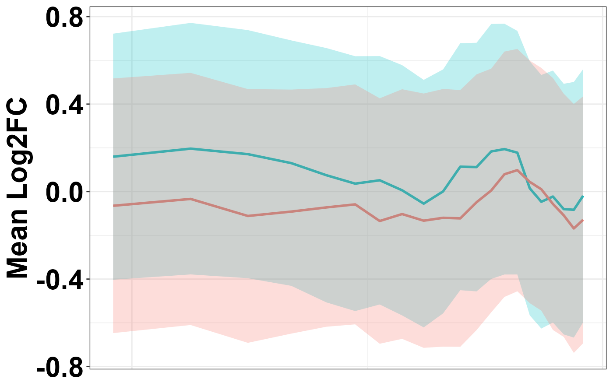
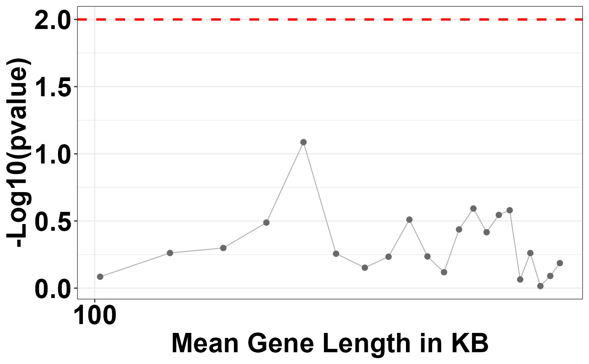

overlayGabelsPlot.RdOverlay Gabel's plot
overlayGabelsPlot(
mat,
bin.size = 200,
shift.size = 40,
comp.between1 = "",
comp.between2 = "",
confidenceinterval = 0.5
)dataframe with first column corresponding to comp.mat, second column to log FC, and third columns to gene length.
bin size
shift size
comp between
comp between
Confidence interval to be displayed on plots
gabels plot
# generate toy data
a <- runif(1000, min=-2, max=2)
b <- runif(1000, min=-2, max=2)
c <- sample(2000:1000000, 1000, replace=TRUE)
df <- data.frame(comp.mat = a, logFC.crude = b, gene.length = c)
overlayGabelsPlot(mat = df,comp.between1 = "(WT/WT)",
comp.between2 = "(KO/WT)",bin.size = 200,
shift.size = 40, confidenceinterval=0.50)
#> $plot1

#>
#> $plot2

#>
#> $bins.stat
#> mat.mean1 mat.mean2 mat.sd.1 mat.sd.2 bin.width mat.length pval
#> 1 -0.093163315 -0.068418846 1.056905 1.143009 200 102.5765 0.82226151
#> 2 -0.028841252 0.038701932 1.109195 1.133670 200 142.5274 0.54734546
#> 3 -0.035384740 0.041501115 1.133382 1.157420 200 183.2222 0.50246986
#> 4 -0.067328898 0.047636339 1.153422 1.179908 200 224.4484 0.32504909
#> 5 -0.046077027 0.155884888 1.159970 1.156104 200 267.2942 0.08193113
#> 6 0.011567487 0.081591796 1.194883 1.171356 200 311.5880 0.55429890
#> 7 -0.013871535 0.031261185 1.185764 1.190343 200 356.8176 0.70423176
#> 8 -0.024284759 0.039195147 1.156225 1.159356 200 398.8916 0.58380394
#> 9 -0.005128932 0.113547962 1.160175 1.169184 200 440.1330 0.30884178
#> 10 0.030426734 -0.034315286 1.169423 1.173552 200 479.1867 0.58081524
#> 11 0.011308448 0.046565634 1.143276 1.176163 200 518.0469 0.76129894
#> 12 -0.062162501 0.040209447 1.113188 1.147306 200 556.0143 0.36567204
#> 13 -0.046878459 0.082257304 1.118749 1.148939 200 594.9108 0.25546409
#> 14 -0.001200479 0.095810130 1.089951 1.133693 200 633.1161 0.38353409
#> 15 -0.028755257 0.088683071 1.060348 1.133028 200 670.5666 0.28515468
#> 16 -0.061153889 0.064868429 1.114504 1.134701 200 705.8418 0.26315571
#> 17 -0.016535496 0.003365568 1.131182 1.156382 200 741.4528 0.86196737
#> 18 -0.051144685 -0.120047633 1.128075 1.163616 200 777.8028 0.54801211
#> 19 -0.113108679 -0.108053268 1.113329 1.182768 200 815.5316 0.96491484
#> 20 -0.116891220 -0.144625697 1.134822 1.186040 200 854.3163 0.81127273
#> 21 -0.148700762 -0.096065107 1.129975 1.193560 200 893.9185 0.65087131
#> pval.log10 fdr gene.type
#> 1 0.08499004 0.9050657 0
#> 2 0.26173848 0.8757059 0
#> 3 0.29888998 0.8757059 0
#> 4 0.48805104 0.8757059 0
#> 5 1.08655104 0.8757059 0
#> 6 0.25625598 0.8757059 0
#> 7 0.15228439 0.9050657 0
#> 8 0.23373298 0.8757059 0
#> 9 0.51026395 0.8757059 0
#> 10 0.23596200 0.8757059 0
#> 11 0.11844478 0.9050657 0
#> 12 0.43690825 0.8757059 0
#> 13 0.59267014 0.8757059 0
#> 14 0.41619602 0.8757059 0
#> 15 0.54491950 0.8757059 0
#> 16 0.57978720 0.8757059 0
#> 17 0.06450917 0.9050657 0
#> 18 0.26120984 0.8757059 0
#> 19 0.01551102 0.9649148 0
#> 20 0.09083312 0.9050657 0
#> 21 0.18650487 0.9050657 0
#>
#> $bins.info
#> start end pos.logfc neg.logfc overall.logfc mat.length
#> 1 1 200 94 106 no 102.5765
#> 2 41 240 99 101 no 142.5274
#> 3 81 280 97 103 no 183.2222
#> 4 121 320 95 105 no 224.4484
#> 5 161 360 97 103 no 267.2942
#> 6 201 400 103 97 yes 311.5880
#> 7 241 440 103 97 yes 356.8176
#> 8 281 480 102 98 yes 398.8916
#> 9 321 520 100 100 yes 440.1330
#> 10 361 560 105 95 yes 479.1867
#> 11 401 600 102 98 yes 518.0469
#> 12 441 640 94 106 no 556.0143
#> 13 481 680 96 104 no 594.9108
#> 14 521 720 104 96 yes 633.1161
#> 15 561 760 101 99 yes 670.5666
#> 16 601 800 96 104 no 705.8418
#> 17 641 840 97 103 no 741.4528
#> 18 681 880 94 106 no 777.8028
#> 19 721 920 84 116 no 815.5316
#> 20 761 960 81 119 no 854.3163
#> 21 801 1000 83 117 no 893.9185
#>